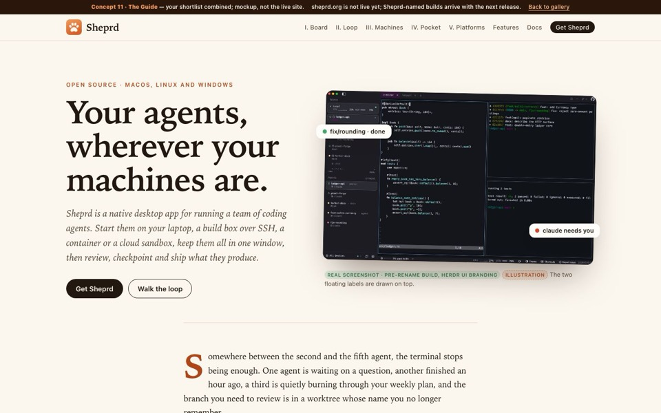

Positioning
“Run a team of coding agents from one native window.” Sheprd is presented on its own merits as a complete workbench for coding agents on macOS, Linux and Windows. It is not pitched as “a window for Herdr”: Herdr now has its own app.
Read first
- Positioning brief: audience, hero copy, workflows, and facts to confirm
- Feature inventory: about 70 features with source refs, status, platform gaps, and codebase metrics
Honesty rules
Screenshots are real (demo data, pre-rename “Herdr UI” build). Hand-drawn UI is tagged Illustration. Commands match main after the Sheprd rename; sheprd.org and Sheprd-named builds are not out yet.

New · built from your shortlist
11 · The Guide
One page combining what you marked, with 04 Atlas as its docs companion.
- 01 Field Guide: serif, cream paper, chapters, drop cap
- 02 Control Room: the tagged agent board
- 03 The Loop: the six-step rail, as Chapter II
- 05 Bento: the tilted hero window
- 07 Everywhere: the headline, machines, phone and platform list
- 08 and 10: the feature table and directory, one set of filters
- 10 Keynote: Get Sheprd at the bottom
Open The Guide Open docs companion Open herdrui.dev rename page
Recommendation
My shortlist, written after building all ten:
The ten concepts
Comparison
Ratings are my judgment, out of five. “Breadth” is how much of the feature set a visitor meets without searching. “Scan” is how fast someone skimming gets the point.
| # | Concept | Look | Structure | Hero | Breadth | Scan | Upkeep |
|---|